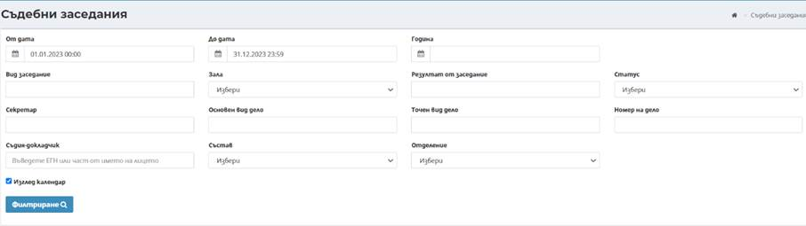
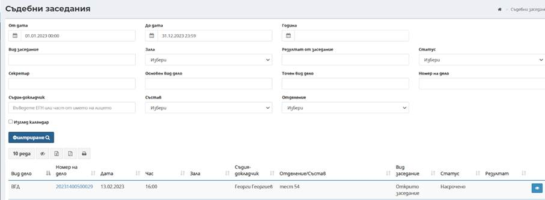
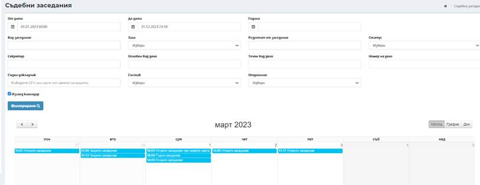

Под-меню Съдебни заседания дава възможност за извършване на търсене и преглед на насрочени, проведени и отменени съдебни заседания.

При първоначално зареждане на екран Съдебни заседания не се визуализират резултати. При директно натискане на бутон Филтриране, се извеждат данни за всички дела, по които има заседания със съответната информация за тях. Наборът от данни може да бъде филтриран, в зависимост от въведените критерии в горната част на екрана и по следните полетата:
- От дата - До дата – за определяне на период в който е регистриран документа. В полето „От дата“ автоматично се зарежда 00:00 часа, а в полето „До дата“ 23:59часа;
- Година – за бързо извеждане на документите за цяла календарна година, като полетата От дата и До дата не трябва да са попълнени;
- Вид заседание – избор от номенклатура за филтриране типа заседание;
- Зала – избор от наименованията на залите;
- Резултат от заседание – избира се от падащ списък с номенклатура резултат от съдебното заседание;
- Статус – избира се статус на заседанието от падащ списък с номенклатура;
- Секретар – филтър чрез автоматично попълване след търсене по имена на секретар;
- Основен вид дело – избира се основен вид дело от номенклатура
- Точен вид дело – избира се точен вид дело от номенклатура
- Номер на дело – въвеждане на част от номер на дело или пълен 14 цифрен номер на дело;
- Съдия докладчик;
- Състав – наименование на предефинираните състави в създадени в конкретния съд;
- Отделение – наименование на съответното отделение в текущия съд.

За всяко заседание се визуализира систематизирана информация по отношение на дата и час на заседанието, вид заседание, зала, статус, номер на дело. Допълнително може да се извършва сортиране на резултатите по възходящ или низходящ ред за съответната колона в таблицата.
За всеки запис в таблицата е възможно извършване на допълнителни действия, посредством избор номер на дело, представляващи хипервръзка, която препраща към екрани за преглед на дело, по което е регистрирано заседанието. Бутон Преглед визуализира данни за конкретното заседание по дело.
При маркиране на чекбокс изглед календар, всички заседания се визуализира в календарна форма.
